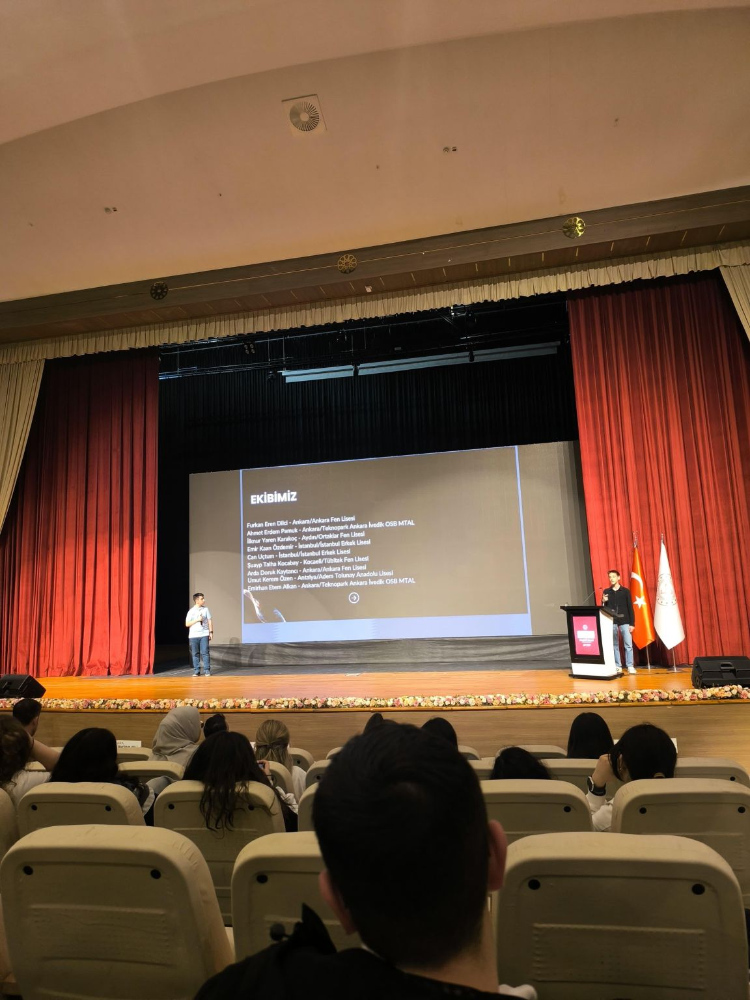

Bir Hayalden Ulusal Bir Hedefe
Piyonist, Türkiye'nin dört bir yanından gelen, teknoloji ve satranç tutkunu lise öğrencilerinden oluşan güçlü bir ekibin hayalidir. Amacımız, sadece bir satranç motoru geliştirmek değil, aynı zamanda yapay zekâ teknolojilerini satranç eğitimiyle birleştirerek ülkemizin bu alandaki gelişimine katkıda bulunmaktır.
T.C. Millî Eğitim Bakanlığı ve Türkiye Satranç Federasyonu gibi değerli kurumların desteğiyle, her yaştan satranç oyuncusunun kendi potansiyelinin zirvesine ulaşmasına yardımcı olmayı hedefliyoruz.